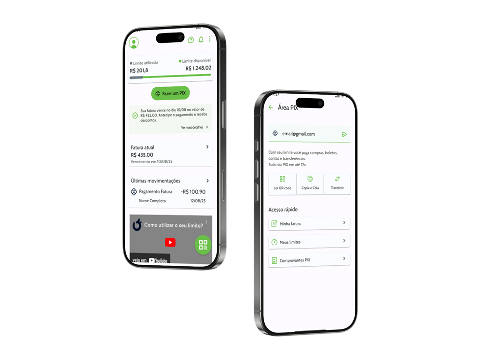
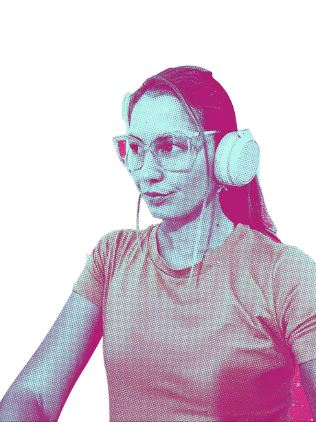
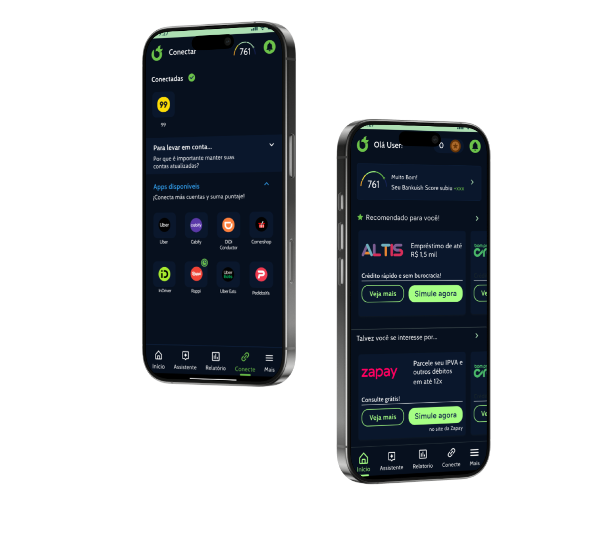
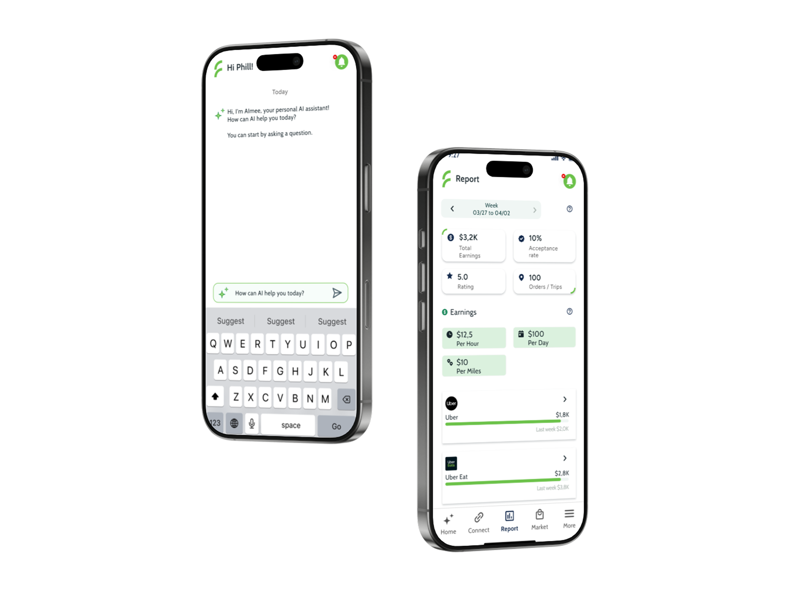
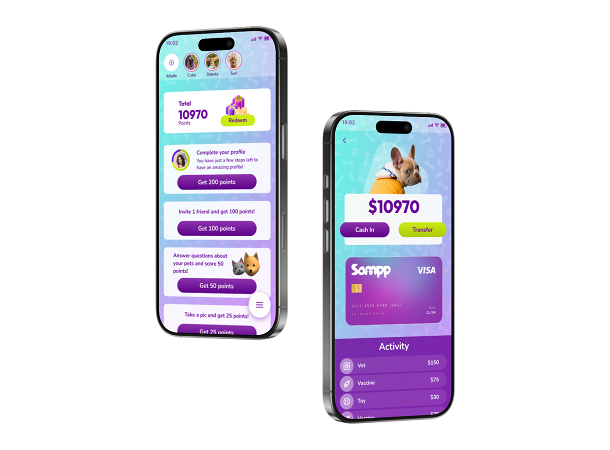
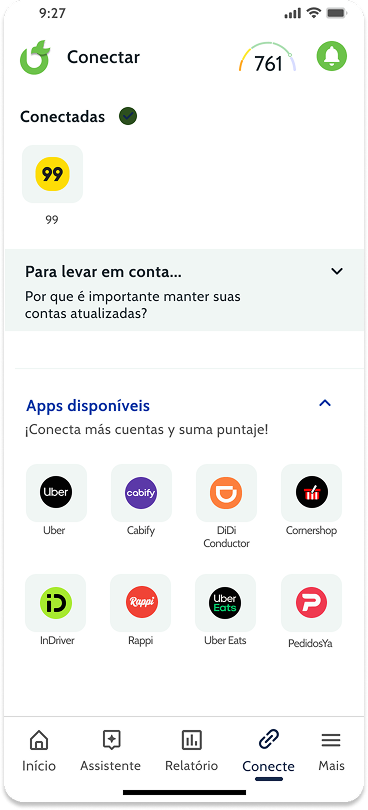

FintechNeobank App
Diseño de App para neobank en Brasil. Límites de crédito innovador.
UX UI
Diseño productos digitales con foco en experiencia de usuario, IA aplicada y resultados de negocio.

Sobre mí
Me especializo en inteligencia artificial aplicada al product design, integrando herramientas y flujos de trabajo basados en IA para optimizar research, ideación, prototipado y validación.
Trabajo con startups y empresas como consultora UX y freelance, ayudando a definir problemas reales, tomar mejores decisiones de producto y diseñar experiencias accesibles, intuitivas y alineadas con objetivos de negocio.
Proyectos destacados

FintechDiseño de App para neobank en Brasil. Límites de crédito innovador.

FintechApp lanzada en USA que analiza los datos de los usuarios y responde con inteligencia artificial, ayudándolos a conseguir productos financieros.

FintechPlataforma de análisis de datos de trabajadores que ofrece productos financieros personalizados.

FintechAplicación para pedir comida de mascotas, ganar puntos y tener una billetera virtual para tu mascota.
Consultoría UX
Ayudo a equipos digitales a tomar mejores decisiones de producto mediante estrategia UX, research enfocado y recomendaciones accionables.

Mi proceso de diseño
Integro metodologías según cada proyecto para diseñar soluciones pensadas en el impacto real.
Investigación cualitativa y cuantitativa para entender el problema.
Generación de conceptos y priorización basada en insights.
Wireframes, prototipos y visuales con foco en usabilidad.
Validación con usuarios y ajustes basados en feedback.
Hand-off directo con desarrollo y seguimiento del producto.
Habilidades & Herramientas
Referencias
Tuve el placer de trabajar con Libe durante casi dos años desde mi rol como Product Manager en equipos de diseño. Durante ese tiempo se desempeñó como UX/UI Designer con una mirada integral, sólida criterio de diseño y un fuerte enfoque tanto en el usuario como en los objetivos del negocio.
¿Trabajamos juntos?
Contáctame
paredeslibe@gmail.com Whatsapp +54 1132914989